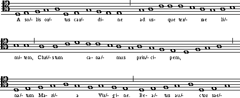

Humdrum provides three pre-defined representations pertinent
to text or lyrics.
The
**text
representation can be used to represent words;
the
**silbe
representation can be used to represent syllables;
and the
**IPA
representation can be used to represent phonemes
(via the International Phonetic Alphabet).
Discussion of the **IPA representation will be delayed
until
Chapter 34.
In this chapter we will look at various representational and processing
issues related to the manipulation of words and syllables.
Syllable- and word-oriented representations are
illustrated in the following excerpt from a motet by Byrd (Example 27.1).
The encoded Humdrum data includes three spines:
**text, **silbe and **kern.
Normally, only the **silbe and **kern data would be
encoded -- since the **text spine can be generated
from the **silbe representation.
Example 27.1. From William Byrd, Why Do I use my paper ink and pen.

!!!COM: Byrd, William |
| !!!OTL: Why do I use my paper ink and pen. |
| **text | **silbe | **kern |
| *LEnglish | *LEnglish | * |
| =11 | =11 | =11 |
. | . | 2r |
| Why | Why | 2g |
| =12 | =12 | =12 |
| do | do | 2b- |
| I | I | 2a |
| =13 | =13 | =13 |
| use | use | 4g |
| my | my | 4g |
| paper | pa- | [2dd |
| =14 | =14 | =14 |
. | | | 2dd] |
. | -per | 2cc |
| =15 | =15 | =15 |
| ink | ink | 2.ff |
| and | and | (4ee |
| =16 | =16 | =16 |
. | | | 4dd |
. | | | 4cc |
. | | | 4b- |
. | | | 4cc |
| =17 | =17 | =17 |
| pen, | pen, | 1dd |
| =18 | =18 | =18 |
| and | and | 1dd |
| =19 | =19 | =19 |
| pen, | pen, | 1dd |
| =20 | =20 | =20 |
. | . | 2r |
| and | and | 2ff |
| =21 | =21 | =21 |
| call | call | 2.ee |
| my | my | 4dd |
| =22 | =22 | =22 |
| wits | wits | 1cc# |
| =23 | =23 | =23 |
| to | to | 2ee |
| counsel | coun- | [2aa |
| =24 | =24 | =24 |
. | -sel | 4aa] |
| what | what | 4ff |
| to | to | (8ee |
. | | | 8dd |
| =25 | =25 | =25 |
. | | | 4cc |
. | | | 4dd |
. | | | 4.ee |
. | | | 8dd |
| =26 | =26 | =26 |
. | | | 4ee |
. | | | 4ee |
. | | | 2dd) |
| =27 | =27 | =27 |
| say, | say, | 1cc# |
| =28 | =28 | =28 |
| *- | *- | *- |
Note that all three representations in Example 27.1 make use of
the common system for representing barlines.
In the
**text
representation tokens represent individual words.
In some scores, several words will be associated with a single moment
(or pitch), as in the case of
recitativo
passages.
Multi-word tokens are encoded as Humdrum multiple-stops with a space
separating each word on a record.
In the
**silbe
representation tokens represent individual syllables.
In **silbe the hyphen (-) is used explicitly to signify syllable
boundaries and the tilde (~) is used to signify boundaries
between hyphenated words (necessarily also a syllable boundary).
In other words, four types of syllables are distinguished by **silbe:
(1) a single-syllable word,
(2) a word-initiating syllable,
(3) a word-completing syllable, and
(4) a mid-word syllable.
The following table illustrates how these signifiers are used:
Table 26.1.
| text | a single-syllable word |
| text- | a word-initiating syllable |
| -text | a word-completing syllable |
| -text- | a mid-word syllable |
| text~ | a single-syllable word beginning a hyphenated multi-word |
| ~text | a single-syllable word completing a hyphenated multi-word |
| ~text~ | a single-syllabe word continuing a hyphenated multi-word |
| ~text- | a word-initating syllable continuing a hyphenated multi-word |
| -text~ | a word-completing syllable -- part of a hyphenated multi-word |
Both the **text and **silbe representations are able to
distinguish different tones of voice such as spoken voice, whispered voice,
laughing voice, emotional voice,
Sprechstimme
and humming.
In addition, there are signifiers for indicating untexted laughter
and untexted sobs or crys.
Some sample signifiers are shown in Table 26.2
Table 26.2.
A-Z | upper-case letters A to Z |
a-z | lower-case letters a-z |
( | open parenthesis |
) | closed parenthesis |
{ | beginning of phrase |
} | end of phrase |
% | silence (rest) token (character by itself) |
M | humming voice (character by itself) |
[ | beginning of spoken voice |
[[ | beginning of whisper |
] | end of spoken voice |
]] | end of whisper |
< | beginning of Sprechstimme |
> | end of Sprechstimme |
# | beginning of laughing voice |
## | end of laughing voice |
@ | laughter (no text) |
& | sob or cry (no text) |
$ | beginning of emotional voice |
$$ | end of emotional voice |
* | follows stressed word (**test) or stressed syllable (**silbe) |
Signifiers common to **text and **silbe
The text Command
In most notated music, lyrics are written using a syllabic representation
rather than a word-oriented representation.
The **silbe representation is typically a better representation
of the score than **text.
However, for many analytic applications, words often prove
to be more convenient.
The Humdrum
text
command can be used to translate **silbe data to **text data.
In general, syllabic information is useful for addressing questions related to
rhythm and rhyme, whereas text information is more useful for addressing
questions related to semantics, metaphor, word-painting, etc.
Invoking the
text
command is straightforward:
text inputfile > outputfile
The fmt Command
Another common task is simply to provide a readable text of the
text or lyrics of a work.
Given a **text representation, we can use the
rid
command to eliminate all records except non-null data records.
This will result in a list of words -- one word per line.
UNIX provides a simple text formatter called
fmt
that will assemble words or lines into a block text where
all output lines are roughly the same width.
Consider the Gregorian chant
A Solis Ortus
from the
Liber Usualis
(shown in Example 27.2.)
Example 27.2. Beginning of chant A Solis Ortus.

The Latin text for this chant can be formatted as follows:
extract -i '**silbe' chant12 | text | rid -GLId | fmt -50
The
-50
option tells
fmt
to place no more than 50 characters per line.
The default line-length is 72 characters.
The above pipeline produces the following output:
A solis ortus cardine ad usque terrae limitem,
Christum canamus principem, natum Maria Virgine.
Beatus auctor saeculi servile corpus induit: ut
carne carnem liberans, ne perderet quos condidit.
Castae parentis viscera cae lestis intratgratia:
venter puellae bajulat secreta, quae non noverat.
Domus pudici pectoris tem plum repente fit Dei:
intacta nesciens virum, concepit alvo filium.
Another useful output would have the text arranged with one sentence
or phrase on each line.
As before we can use the
context
command with the
-e
option to amalgamate words, where each amalgamated line ends with
a punctuation mark:
extract -i '**silbe' chant12 | text | context -e '[.,;:?!]' \
| rid -GLId
The corresponding output is:
A solis ortus cardine ad usque terrae limitem,
Christum canamus principem,
natum Maria Virgine.
Beatus auctor saeculi servile corpus induit:
ut carne carnem liberans,
ne perderet quos condidit.
Castae parentis viscera cae lestis intratgratia:
venter puellae bajulat secreta,
quae non noverat.
Domus pudici pectoris tem plum repente fit Dei:
intacta nesciens virum,
concepit alvo filium.
Yet another way of arranging the text output would be to parse
the text according to explicit phrase marks in the
**kern
data.
This will require a little more work, but it's worth going through the steps
since the same process can be applied to any representation.
First, we will need to transfer the end-of-phrase signifier (`}') from
the **kern spine to the **silbe spine.
This transfer entails four steps.
(1) Extract the monophonic **kern spine and eliminate all data
signifiers except closing curly braces (`}').
Store the result in a temporary file:
extract -i '**kern' chant12 | humsed 's/[^}]*//; s/^$/./' \
> temp1
Notice that
humsed
has been given two substitution commands.
The first eliminates all data signifiers except the close curly brace.
The second substitution transforms empty output lines to null data records
by adding a single period.
(2) Extract the **silbe spine, translate it to **text
and store the result in another temporary file:
extract -i '**silbe' chant12 | text > temp2
(3) Assemble the two temporary files together and use the
cleave
command to join the end-of-phrase marker to the syllable representation.
assemble temp1 temp2 | cleave -i '**kern,**text' \
-o '**text' > temp3
With this cleaved data we can now use the
context
command to amalgamate phrase-related text.
Finally,
rid
is used to eliminate everything but non-null data records.
context -o = -e } temp3 | rid -GLId
The result is as follows:
A solis ortus cardine }
ad usque terrae limitem, }
Christum canamus principem, }
natum Maria Virgine. }
Beatus auctor saeculi }
servile corpus induit: }
ut carne carnem liberans, }
ne perderet quos condidit. }
Castae parentis viscera }
cae lestis intratgratia: }
venter puellae bajulat }
secreta, quae non noverat. }
Domus pudici pectoris }
tem plum repente fit Dei: }
intacta nesciens virum, }
concepit alvo filium. }
We could clean up the output by using the
sed
command to remove the trailing closed curly brace.
We simple add the following to the pipeline:
. . . | sed 's/}//'
You might have noticed that each of the above phrases seems to consist
of eight syllables.
We can confirm this by returning to the syllabic rather than
word-oriented output.
For the above command sequence, simply omit the
text
command and replace **text with **silbe.
The revised script becomes:
extract -i '**kern' chant12 | humsed 's/[^}]*//; s/^$/./' \
> temp1
extract -i '**silbe' chant12 > temp2
assemble temp1 temp2 | cleave -i '**kern,**silbe' \
-o '**silbe' > temp3
context -o = -e } temp3 | rid -GLId | sed 's/}//'
The corresponding output is:
A so/- -lis or/- -tus car/- -di- -ne
ad us- -que ter/- -rae li/- -mi- -tem,
Chri/- -stum ca- -na/- -mus prin/- -ci- -pem,
na/- -tum Ma- -ri/- -a Vir/- -gi- -ne.
Be- -a/- -tus au/- -ctor sae/- -cu- -li
ser- -vi/- -le cor/- -pus in/- -du- -it:
ut car/- -ne car/- -nem li/- -be- -rans,
ne per/- -de- -ret quos con/- -di- -dit.
Ca/- -stae pa- -ren/- -tis vis/- -ce- -ra
cae/ le/- -stis in/- -trat- -gra/- -ti- -a:
ven/- -ter pu- -el/- -lae ba/- -ju- -lat
se- -cre/- -ta, quae non no/- -ve- -rat.
Do/- -mus pu- -di- -ci pe/- -cto- -ris
tem/ plum re- -pen/- -te fit De/- -i:
in- -ta/- -cta ne/- -sci- -ens vi/- -rum,
con- -ce/- -pit al/- -vo fi/- -li- -um.
If we are looking for vocal texts that exhibit a recurring rhythm,
we might make a simple addition to the above script.
Instead of outputting the actual syllables in each phrase,
we would output a count of the number of syllables in each phrase.
The standard
awk
utility allows us to write simple in-line programs.
The following
awk
script simply outputs the number of fields (white-space separated text)
in each input line:
awk '{print NF}'
If we add this to the end of our command sequence, then
the output would simply be a sequence of numbers -- where each
number indicates the number of syllables in successive phrases.
In the case of
O Solis Ortus
our output would consist of a series of 8s indicating that
each phrase contains precisely eighth syllables.
By way of summary, we can generalize the above process so that
syllable/phrase schemes can be generated for any syllable-related input.
The following script counts the number of
syllables in successive phrases for a single input file.
# SYLLABLE - count the number of syllables in each phrase
#
# Usage: syllable filename [ > outputfile]
#
extract -i '**kern' $1 | humsed 's/[^}]*//; s/^$/./' > temp1
extract -i '**silbe' $1 > temp2
assemble temp1 temp2 | cleave -i '**kern,**silbe' -o '**silbe' \
| context -o = -e } | rid -GLId | sed 's/}//' | awk '{print NF}'
rm temp[12]
Variations on this theme abound.
For example, if we wish to determine the number
of syllables between successive punctuation marks,
the following pipeline could be used:
extract -i '**silbe' | context -o = -e '[.,;:?!]' \
| rid -GLId | awk '{print NF}'
Rhythmic Feet in Text
Another question related to rhythm is to identify rhythmic patterns.
Once again, we might look at the chant
O Solis Ortus.
Below we have recoded the syllables in each phrase,
where the value 0 indicates an unstressed syllable and 1
indicates a stressed syllable:
0 1 0 1 0 1 0 0
0 0 0 1 0 1 0 0
1 0 0 1 0 1 0 0
1 0 0 1 0 1 0 0
0 1 0 1 0 1 0 0
0 1 0 1 0 1 0 0
0 1 0 1 0 1 0 0
0 1 0 0 0 1 0 0
1 0 0 1 0 1 0 0
1 1 0 1 0 1 0 0
1 0 0 1 0 1 0 0
0 1 0 0 0 1 0 0
1 0 0 0 0 1 0 0
1 0 0 1 0 0 1 0
0 1 0 1 0 0 1 0
0 1 0 1 0 1 0 0
The above output was generated using the
humsed
command.
Any syllable containing a trailing asterisk (*) is re-written
as a `1', otherwise as a `0'.
. . . | humsed 's/[^ ][^ ]*\*/1/g; s/[^1][^1]*$/0/g'
With the above output, we can generate an inventory of phrase-related
text-rhythms.
. . . | sort | uniq -c | sort
With the following results:
5 0 1 0 1 0 1 0 0
4 1 0 0 1 0 1 0 0
2 0 1 0 0 0 1 0 0
1 0 1 0 1 0 0 1 0
1 1 1 0 1 0 1 0 0
1 1 0 0 0 0 1 0 0
1 1 0 0 1 0 0 1 0
1 0 0 0 1 0 1 0 0
We can create a summary rhythmic pattern by adding together the
values in each column -- that is, counting the number of accented
syllables that occur in each syllable position within the phrase.
We can isolate each column using the UNIX
cut
command;
cut
is analogous to the Humdrum
extract
command.
Fields are delineated by white space (tabs or spaces).
For example,
cut -f 1
will isolate the first column of numbers.
We can then pipe the results to the
stats
utility in order to calculate the numerical total.
For example,
. . . | cut -f 1 | stats | grep 'total'
. . . | cut -f 2 | stats | grep 'total'
. . . | cut -f 3 | stats | grep 'total'
etc
For the chant
O Solis Ortus
the results are as follows:
7 9 0 13 0 14 2 0
This means that there are seven stressed syllables in the first
syllable position of the phrase,
nine stressed syllables in the second syllable position, and so on.
These results suggest the following
rhythmic structure: medium-strong-weak-strong-weak-strong-weak-weak.
By way of conclusion, it appears that this work has a strongly
rhythmic text structure -- implying that this `chant' might have
been sung rhythmically.
Suppose, for example, that we wanted to create a concordance for
the lyrics in Samuel Barber's songs.
We would like to create a file that has a structure such as shown in
Table 26.3 below.
The first column identifies the filename.
The second column identifies the bar number in which the keyword
occurs.
The third column gives a five-word context where the middle
word (in bold) identifies the keyword.
Table 26.3.
chant29 | 4 | ut possim cantare, Alleluia: gaudebunt |
chant29 | 7 | mea, dum cantavero tibi: Alleluia, |
chant27 | 1 | Cantate Domino canticum novum Alleluia: |
chant54 | 4 | Cantate Domino canticum novum, quia |
chant24 | 10 | Cantate Domino canticum novum: quia |
chant42 | 14 | totus non capit orbis, in |
chant47 | 5 | et exaltavit caput ejus; et |
chant12 | 1 | solis ortus cardine ad usque |
chant14 | 4 | arrisit orto caritas: Maria, dives |
chant12 | 7 | induit: ut carne carnem liberans, |
chant58 | 5 | et in carne mea videbo |
chant12 | 7 | ut carne carnem liberans, ne |
chant14 | 6 | sola quae casto potes fovere |
chant17 | 3 | et discerne causam meam de |
chant21 | 2 | Dominus a cena, misit aquam |
| etc. |
We would also like to provide a grep-like search tool so
users can search for particular keywords.
The following script will generate our concordance file.
For each file specified in the input, we extract the **silbe
spine and store it.
We then process this spine no less than three times.
In the first pass, we translate from the **silbe
to the **text representation,
and generate a context of 5 words (-n 5) making sure to omit
barlines (-o =).
We also pad the amalgamated line with three null tokens (-p 3)
so the context is centered near the third word in the sequence.
In the second pass, we generate a new spine
(**nums)
that contains only bar numbers.
The
ditto
command is used to ensure that every data record contains a bar number.
To ensure that pick-up bars are numbered with the value 0, we've
used
humsed
to replace any leading null-tokens with the number 0.
In the third pass, we replace every data token with the name of the file.
Finally, we assemble all three of these spines, eliminate everything
but data records, and also eliminate lines that don't contain any text.
All of this processing is carried out in a while-loop that cycles
through all of the files provided when the command is invoked.
while [ $# -ne 0 ]
do
extract -i '**silbe' $1 > temp1
text temp1 | context -o = -n 5 -p 3 > temp2
num -n = -a '**nums' temp1 | extract -i '**nums' \
| ditto | humsed 's/\./0/' > temp3
humsed "s/.*/$1/" temp1 > temp4
assemble temp4 temp3 temp2 | rid -GLId | sed '/.* \.$/d'
shift;
done
rm temp[1-4]
Having generated our concordance file, we can now create a simple tool
that allows us to search for keywords.
Suppose we kept our concordance information in a file
called ~/home/concord/master.
In essence, we'd like to create a command akin to
grep
-- but one that searches this file solely according to the third word in the
in the context.
We cannot use
grep
directly since it will find all occurrences of a word no matter where
it occurs in the context.
We need to tell
grep
to ignore all other data.
The filename, bar number, and context fields are separated by tabs.
We can ignore the first two fields by eliminating everything up to
the last tab in the line.
Since words are separated by blank space, the expression [^ ]+
will match a word not containing spaces.
In short, the regular expression "^.*tab[^ ]+ [^ ]+ "
will match everything up to the first tab, followed by two additional words.
All we need to do is paste our keyword to the end of this expression.
Below is a simple one-line script for a command called
keyword.
The user simply types the command
keyword
followed by a regular expression that will allow him/her to search
for a given word in context.
Note that since we've used the extended regular expression character `+' --
we must invoke
egrep
rather than
grep
in our script:
# KEYWORD - A script for searching a master concordance file
#
# Usage: keyword
#
egrep "^.* [^ ]+ [^ ]+ $1" ~/home/concord/master
Concordances can be used for a number of applications.
One might use a concordance to help identify metaphor or image
related words (such as "light," "darkness," etc.)
Simile
One of the most important poetic devices is the
simile
-- where an analogy or metaphorical link is created between
two things ("My love is like a red red rose.")
In English, similes are often (though not always) signalled
by the presence of the words "like" or "as."
A simple task involves searching for `like' or `as' in the
lyrics of some input.
For each occurrence of these words, suppose that we would like
to output a line that places the word in
context -- specifically the preceding and following four words.
First we transform and isolate the text data using the
text
and
extract
commands:
text inputfile | extract -i '**text'
Since the input may contain multiple-stops, we might consider
the precaution of ensuring no more than one word per data record.
For this we can use humsed.
Specifically, we can replace any spaces by a carriage return.
Since the carriage return is interpreted by the shell as
the instruction to begin executing a command,
we need to escape it.
Depending on the shell, the carriage return can be escaped in
various ways.
One way is to precede the carriage return by control-V
(meaning "verbatim").
Another way is to type control-M rather than a carriage return.
In the following command we have used the backslash to escape
a control-M character:
text inputfile | extract -i '**text' | humsed 's/ */\^M/g' \
| egrep -4 '^|(like)|(as)$'
Having ensured that there is no more than one word per line we
can now search for a line contain
just
"like" or "as."
The
-4
option for
egrep
causes any matched lines to be output with four preceding and
four following lines of context.
In addition, an extra line is added consisting of two dashes (--)
to segregate each pattern output.
That is, for each match, ten lines of output are typically given.
In order to generate our final output, we need to transform
the linear list of words into a horizontal list where each
line represents a single match for "like" or "as."
The
context
command would enable us to do this.
Unfortunately, however, the output from
egrep
fails to conform to the Humdrum syntax.
In particular, adding ^\* to the regular expression
will fail to ensure a proper Humdrum output since preceding and
following contextual lines will also be output.
The
hum
command is a special command that takes non-Humdrum input and
adds sufficient interpretation records so as to make the
input conform to the Humdrum syntax.
Typically, this means simply adding a generic initial exclusive interpretation
(**A) and a spine-path terminator (*-).
If the input contains tabs, then appropriate spines will be added.
If the input contains empty lines, then they will be changed to null data records.
text inputfile | extract -i '**text' | humsed 's/ */\^M/g' \
| egrep -4 '^|(like)|(as)$' | hum
Now we can make use of the
context
command.
Each context ends with the double-dash delimiters generated by egrep.
The
rid
command can be used to eliminate the interpretations added by hum.
text inputfile | extract -i '**text' | humsed 's/ */\^M/g' \
| egrep -4 '^|(like)|(as)$' | hum | context -e '--' \
| rid -Id
Word Painting
Word painting has a long history in music.
There are innumerable examples where the music has somehow
reflected the meaning of the vocal text.
Suppose we wanted to determine whether words designating height
(e.g., English "high," German "hoch,"
French "haute/haut") tend to coincide with high pitches.
A simple approach would be to extract those sonorities that
coincide with any of the words high/hoch/haut and determine
the average pitch.
We can then contrast this average pitch with the average pitch
for the repertory as a whole.
Any significant difference might alert us to possible word painting.
First we translate any pitch data to
**semits
and any
**silbe data to **text.
We will also filter the outputs to ensure that
only **semits and **text are present.
semits * | text | extract -i '**semits,**text'
Since a word may be sustained through more than one pitch,
and a pitch may be intoned for more than one word, we should use the
ditto
command to ensure that null tokens are filled-in.
semits * | text | extract -i '**semits,**text' | ditto -s =
Next, we can use
egrep
to search for the words of interest:
semits * | text | extract -i '**semits,**text' | ditto -s = \
| egrep -i '^\*|high|hoch|haut'
Notice the addition of the expression ^\* in the search
pattern.
This expression will match any Humdrum interpretation records and so
ensures that the output conforms to the Humdrum syntax.
We can now isolate the **semits data and pass the output to
stats
in order to determine the average pitch for the words coinciding
with the words high/hoch/haut:
semits * | text | extract -i '**semits,**text' | ditto -s = \
| egrep -i '^\*|high|hoch|haut' | extract -i '**semits' | stats
The average pitch for the entire work can be determined as follows:
semits * | extract -i '**semits' | ditto -s = | rid -GLI \
| stats
Emotionality
Musical texts often convey or portray a wide range of emotions.
Some texts celebrate the ecstacy of love or lament the sorrow of loss.
Yet other texts exhibit little emotional content.
Suppose that we wanted to create a tool that would allow us
to estimate the degree of emotional "charge" in the lyrics
of any given vocal work.
A simple approach might be to look for words that are commonly
associated with high emotional content.
Table 26.4 shows a sample of six words from a study
where 10 people were asked to rate the degree of emotionality
associated with 100 English words.
Participants rated each word on a scale from -10 to +10
where -10 indicates a maximum negative emotional rating
and +10 indicates a maximum positive emotional rating.
The values shown identify the average rating for all 10 participants.
Table 26.4. Average Emotionality Ratings for English Words.
| begin | +3.8 |
| river | +4.2 |
| friend | +5.2 |
| love | +8.6 |
| hate | -9.7 |
| detest | -9.8 |
Clearly, such a rating system might allow us to create a tool
that would automatically search a large database and identify
those vocal works whose lyrics are most emotionally charged.
One way to generate a crude index of emotionality is to
measure the average ratings for the ten most emotion-laden
words in a given input.
The
humsed
command provides an appropriate place to start.
In effect, we would take a table (such as Table 26.4) and
use it to create a series of substitutions.
Emotionally-charged words would be replaced by a numerical rating.
Our
humsed
script would have the following form.
Notice that the first substitution is used to eliminate
punctuation marks.
|
| s/[.,;:'`"!?]//g |
| s/begin/+3.8/ |
| s/river/+4.2/ |
| s/friend/+5.2/ |
| s/love/+8.6/ |
| s/hate/-9.7/ |
| s/detest/-9.8/ |
| /[^0-9+-]/s/.*/./ |
Also notice that the final command transforms any data records
that contains anything other than a number to a null data token.
In other words, words that are not present in the emotionality list
are not rated.
In order to process our input,
any syllabic text would first be translated to the **text
representation, and all other spines discarded using extract -i.
text inputfile | extract -i '**text' ...
Then we would translate the words using our "emotionality" script,
eliminate everything other than data records, and calculate
the numerical statistics:
text inputfile | extract -i '**text' | humsed -f emotion \
| rid -GLId | stats
In general, works whose lyrics express predominantly positive emotions
ought to exhibit positive emotionality estimates.
Similarly, works expressing predominantly negative emotions ought
to exhibit negative emotionality estimates.
Of course the process of averaging may be deceptive.
Two sorts of problems may arise.
First, a large number of fairly neutral words will tend to
dilute an otherwise large positive or negative score.
It may be preferable to observe the maximum positive and negative values.
Alternatively, it may be appropriate to limit the average to (say)
the ten most emotionally charged words.
We can do this by sorting the numerical values and using the
head
and
tail
commands to select the highest or lowest values.
In our revised processing, we use
sort -n
to sort the values in numerical order -- placing the
output in a temporary file.
The UNIX
head
command allows us to access a specified number of lines at the
beginning of a file:
the option
-5
specifies the first five lines.
Similarly, the UNIX
tail
command allows us to access a specified number of lines at the
end of a file.
The ten highest and lowest values are then concatenated together
and piped to the
stats
command:
text inputfile | extract -i '**text' | humsed -f emotion \
| rid -GLId | sort -n > temp
head -5 temp > lowest
tail -5 temp > highest
cat highest lowest | stats
A second problem with averaging together emotion rating values is
that an emotionally-charged work might include a rough balance of passionate
words expressing both positive and negative emotions.
This might result in an average near zero and be mistaken for
lyrics that exhibit little emotionality.
The
stats
command outputs a variance measure that can be used to gauge
the spread of the data.
However, another way to address this problem is by ignoring the
plus and minus signs in the input.
That is, a rough index of emotionality -- independent of
whether the emotion is predominantly negative or positive
would simply focus on the most emotionally charged words.
The plus and minus signs can be eliminated using a simple
humsed
substitution prior to numerical sorting:
humsed 's/[+-]//g'
Once again, we could use the
head
command to isolate the 10 or 20 most emotionally charged words.
Another variant of this approach might be to identify those
words in a text which are most emotionally charged.
Suppose we wanted to determine the location of the most
emotionally charged word.
A combination of
sort
and
grep
can be applied to this task.
First we generate a spine containing the emotional-charge values
taking care to eliminate the signs:
text inputfile | extract -i '**text' | humsed -f emotion \
| humsed 's/[+-]//g' > charges
Next we assemble this new spine with the original input:
assemble charges inputfile
We can isolate data records using
rid
and then use
sort -n
to sort according to the numbers present in the first column.
The most emotional charged word will be at the end of the file
(largest number) so we can use
tail -1
to identify the word:
assemble charges inputfile | rid -GLId | sort -n | tail -1
Having established what word has been estimated as having the
highest emotional-charge, we can then use
grep -n
to establish the location(s) of this word in the original input file.